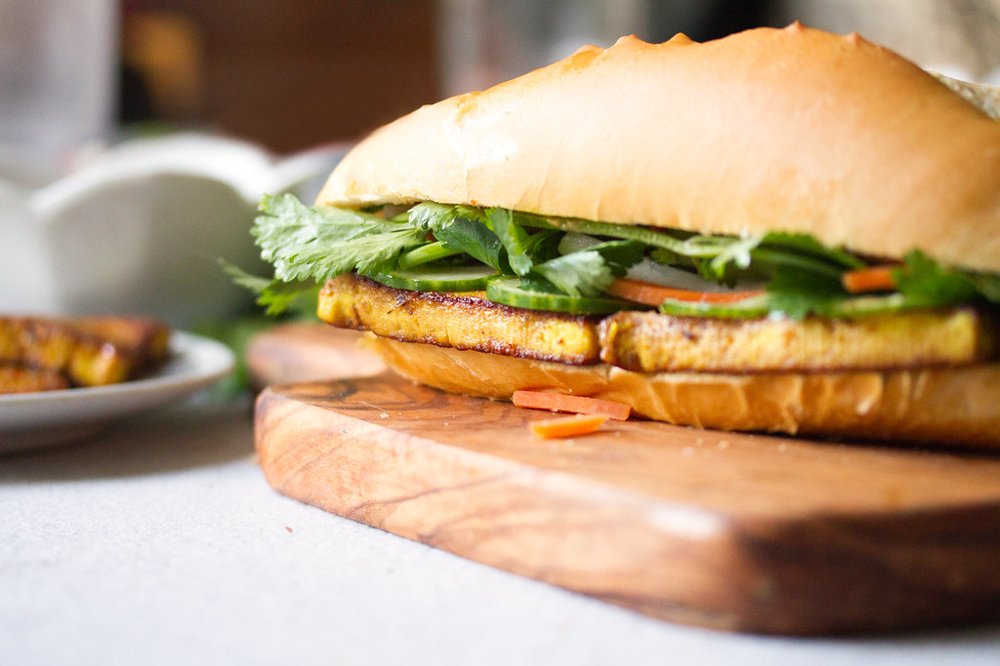

Tofu Banh Mi

A Banh Mi is a popular Vietnamese sandwhich usually made up of
a baguette filled with meat (or tofu), pickled vegetables, and
peppers. It is usually made with some type of aoli spread and
topped with cilantro as shown above.
The story of the banh mi sandwhich begins back in the 17th
century when France colonized Vietnam. As part of their colonization
the French introduced their own foods such as baguettes, cold cuts,
butter, and cheese. However, it was not until after the decicive
defeat of the French at Dien Bien Phu that the Vietnamese were free
to adapt these foods. Mayonnaise was used as a substitute for butter
and veggies took the place of pricier cold cuts.
Mr. and Mrs. Le were the first to create the banh mi by putting
the ingredients into the baguette so that customers could easily carry
and eat their meal. The banh mi has since grown immensely popular and is
a relatively cheap, flavorfol meal. In 1975 after Saigon fell, many Vietnamese
citizens fled and took the recipe for this simple sandwhich with them to other
places around the globe.
Ingredients
- 1 Baguette (6in)
- 2 Tbsp Mayonnaise
- 1 Tbsp Sambol Oelek
- 1/2 Carrot
- 1/2 Cucumber
- Jalapenos
- 1/4 White Vinegar
- 1/4 Cup Rice Vinegar
- 1 Block Extra Firm Tofu
- 1/8 Cup Cilantro
- 1 tsp Salt
- 1 tsp Smoked Paprika
Steps
- Julienne the carrots, cucumber. Deseed and finely chop the jalepeno.
- Combine the carrot, cucumber, jalepeno, rice vinegar, and white vinegar in a container, mix and chill in the fridge for roughly 45 minutes.
- Meanwhile, chop the tofu into 1 inch cubes, drizzle in olive oil, and bake at 400 degrees for 15 to 20 minutes.
- Combine the mayonnaise and chili paste in a small bowl.
- Toast the baguette lightly (optional).
- Spread the spicy mayo on both sides of the baguette, then load up with veggies and tofu. Add salt, smoked paprika, and cilantro and enjoy!